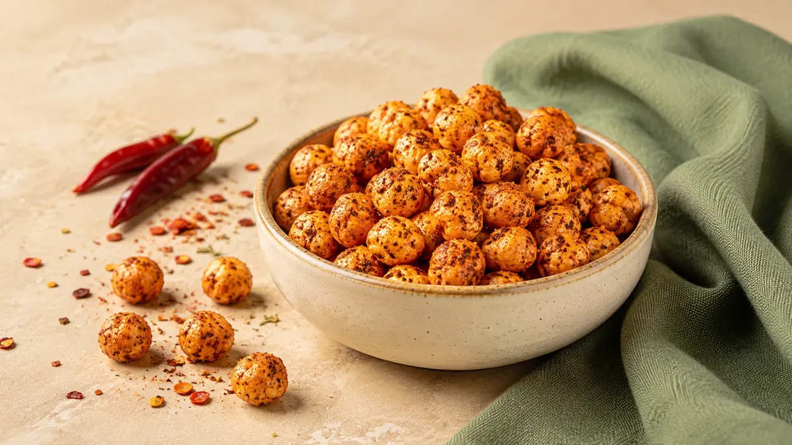
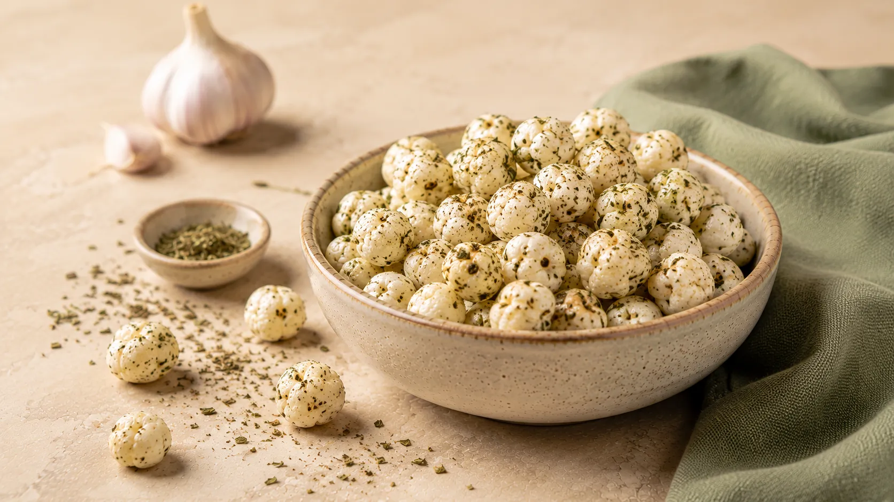
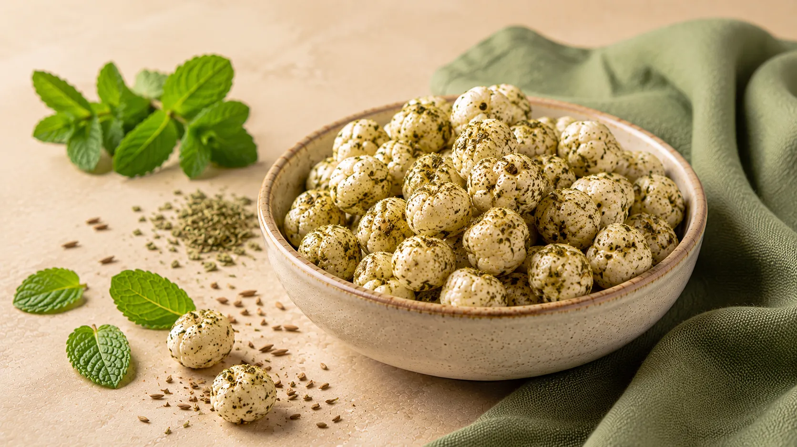
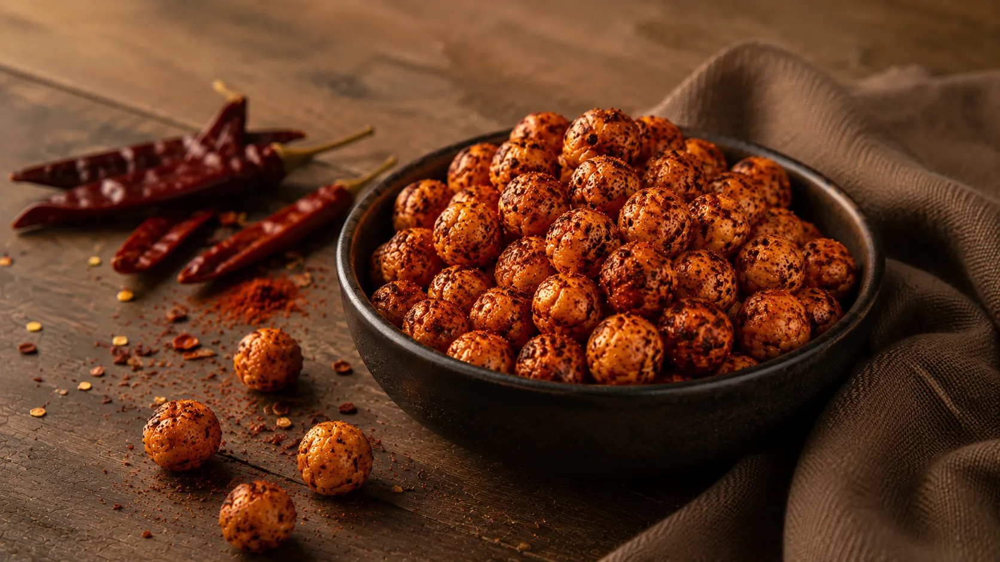

Plain roasted makhana is light and crunchy, but it doesn’t have to be boring. From
spicy peri-peri to sweet cinnamon, these seven simple flavour ideas can turn one basic snack
into something different every day.
✦By Makshroom
Team
There is something satisfying about freshly roasted makhana—the light crunch, the warm toasted flavour,
and the fact that it takes only a few minutes to prepare.
But plain salt-and-pepper makhana every day? That can get repetitive quickly.
The good thing about makhana is that its mild flavour makes it a useful base for different seasonings.
Whether you prefer something spicy, tangy, herby, or slightly sweet, a simple change in seasoning can
completely change the snack.
Here are seven easy flavours worth trying.
Before You Start: Get the Crunch Right
Whatever flavour you choose, start with properly roasted makhana.
Heat a wide pan over low to medium-low heat. Add the makhana and roast slowly, stirring frequently,
until crisp. Depending on the quantity and heat, this can take several minutes.
To check whether it is ready, take one piece, allow it to cool briefly, and bite into it. It should
feel crisp rather than chewy.
Once the makhana is roasted, use a small amount of oil or ghee if needed to help dry seasonings coat
the surface.
The simple rule: roast first, season carefully, and let the makhana cool before storing
it.
7 Easy Makhana Flavours :
1
Classic Salt & Black Pepper
Sometimes the simplest flavour is the one you return to most often.
A little salt and freshly ground black pepper give roasted makhana a clean, savoury flavour
without overpowering its natural toasted taste.
You’ll need: salt, black pepper, and a small amount of oil or
ghee.This is a good everyday option when you want something simple with tea or coffee.
2
Peri-Peri Makhana 🌶️
If you enjoy bold, spicy snacks, peri-peri makhana is an easy place to start.
After roasting, toss the warm makhana with a light coating of oil and your preferred peri-peri
seasoning. Start with a small amount, mix well, taste, and then add more if needed.
The result is spicy, tangy, and much more exciting than plain roasted makhana.
Best for: movie nights and evening snack cravings.

3
Masala Makhana 🇮🇳
This version brings familiar Indian snack flavours to a bowl of roasted makhana.
Try a combination of roasted cumin powder, a little chilli powder, black salt, and a small amount
of chaat masala.
The key is balance. Too much powdered seasoning can make the flavour harsh and leave excess spice
at the bottom of the bowl.
Best for: chai time.
4
Garlic & Herb Makhana 🌿
Not every makhana flavour needs to be spicy.
Garlic and herbs create a more subtle savoury snack. Use garlic powder rather than fresh garlic
if you plan to store the makhana, and combine it with dried herbs such as oregano or mixed
Italian seasoning.
This version works particularly well when you want something different from traditional masala
flavours.
Flavour profile: savoury, aromatic, and mild.

5
Pudina Chaat Makhana 🍃
Mint and chaat masala make a refreshing, tangy combination.
Use a dry mint or pudina seasoning along with a small amount of chaat masala and roasted cumin
powder. Toss it with freshly roasted makhana while the surface is still lightly coated.
The flavour is fresh, chatpata, and distinctly Indian.
Best for: anyone who loves the flavour of pudina chutney and
chaat.

6
Smoky Chilli Makhana 🔥
This one is for people who like a deeper, warmer kind of spice.
Combine mild chilli powder or paprika with garlic powder, a little roasted cumin, and salt. The
aim is to create a smoky savoury flavour rather than simply making the snack extremely hot.
A small pinch of spice goes a long way, so add gradually and taste as you mix.
Flavour profile: smoky, warm, and savoury.

7
Cinnamon Jaggery Makhana ✨
Makhana doesn't always have to be savoury.
For a lightly sweet version, a small amount of jaggery and cinnamon can create a warm
dessert-inspired flavour. Melt the jaggery carefully with a little water or ghee, coat the
roasted makhana lightly, and allow it to cool completely.
Because this version contains added sugar, it is better viewed as an occasional sweet snack
rather than automatically treating it as equivalent to plain roasted makhana.
Best for: when you want something sweet and crunchy.
Which Flavour Should You Try First?
That depends entirely on your mood.
If you want something simple, start with salt and black pepper. For spice lovers, peri-peri or smoky
chilli are the obvious choices. If you enjoy Indian street-food flavours, try masala or pudina
chaat.
And when the sweet craving arrives, cinnamon jaggery offers a completely different way to enjoy
makhana.
You can also divide one freshly roasted batch into smaller bowls and season each one differently. It
is an easy way to discover which flavour you actually enjoy most.
A Small Storage Tip
Let roasted makhana cool completely before putting it into an airtight container.
Storing it while it is still warm can trap moisture inside the container and affect the crisp texture.
Also, flavours containing wet ingredients or fresh herbs are better eaten sooner rather than stored like
dry-seasoned versions.
✦
The Bottom Line
Roasted makhana is one of those snacks where a small change in seasoning can make a big difference.
You don't need complicated recipes or a long ingredient list. Start with properly roasted, crispy
makhana, add seasoning gradually, and experiment with the flavours you already enjoy.
One bowl of plain makhana can become spicy, tangy, herby, smoky, or sweet. The
difficult part might simply be choosing which flavour to make first.